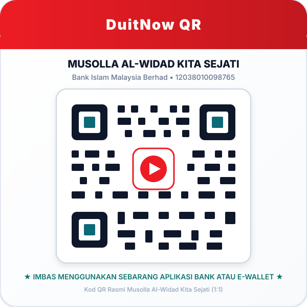

Musolla Al-Widad Kita Sejati
Pusat penyatuan ibadah, penyubur ukhuwah kejiranan, dan kebajikan bersama demi membina komuniti Pangsapuri Kita Sejati yang diberkati dan harmoni.
Musolla Al-Widad
Pangsapuri Kita Sejati Cybersouth
Pengumuman & Hebahan Semasa
Maklumat terkini untuk perhatian seluruh warga jemaah dan penduduk Kita Sejati.
Pengurusan Musolla
Struktur kepimpinan dan tadbir urus telus berteraskan syarak dan perlembagaan demi kemaslahatan jemaah.
Akan Dikemaskini Sepenuhnya
PemberitahuanKenyataan rasmi visi & misi penuh kini dalam fasa pemurnian akhir oleh Jawatankuasa Penaja Musolla Al-Widad Kita Sejati.
Visi (Draf Rujukan)
Menjadikan Musolla Al-Widad Kita Sejati sebagai pusat ibadah yang makmur, melahirkan warga yang berilmu, bersatu hati dan bertakwa, serta menjadi model kerukunan komuniti perumahan.
Misi (Draf Rujukan)
- Menyediakan kemudahan solat yang bersih, kondusif dan selesa.
- Menganjurkan kuliah agama, tadarus dan bimbingan Al-Quran.
- Memupuk ukhuwah dan gotong-royong warga Pangsapuri Kita Sejati.
- Mentadbir dana infaq secara telus, profesional dan amanah.
Nilai Teras Kami
Ukhuwah
Persaudaraan erat
Amanah
Integriti kewangan
Ihsan
Amalan kualiti tinggi
Inklusif
Mesra semua lapisan
Carta Organisasi Jawatankuasa
Barisan kepimpinan Jawatankuasa Musolla Al-Widad Kita Sejati bagi sesi pentadbiran semasa.
Perlembagaan Musolla Al-Widad
Dokumen rasmi perlembagaan yang menggariskan tatacara pentadbiran, bidang kuasa jawatankuasa dan pengurusan kewangan musolla.
Program Khairat Kematian
Penyertaan Rasmi di Bawah Naungan Masjid Al-Ilmi Dengkil
Bagi memastikan urusan fardu kifayah terlaksana dengan sempurna, pantas dan teratur, Musolla Al-Widad Kita Sejati telah bergabung dan bernaung di bawah program Khairat Kematian Masjid Al-Ilmi Dengkil.
Pengurusan Lengkap
Menampung urusan mandi, kain kafan, solat jenazah sehingga ke pengebumian di tanah perkuburan Islam yang ditetapkan.
Pengangkutan Van
Kemudahan logistik van jenazah disediakan daripada hospital/rumah ke musolla dan tanah perkuburan.
Sumbangan Ihsan
Bantuan wang saguhati kematian disalurkan kepada waris terdekat bagi meringankan beban perbelanjaan serta-merta.
Pakej Seisi Rumah
Satu keahlian melindungi ketua keluarga, pasangan serta anak-anak tanggungan yang sah di bawah perlembagaan.
Cara Pendaftaran Melalui Sistem e-Khairat
Pendaftaran dibuat secara terus melalui pautan sistem rasmi Masjid Al-Ilmi Dengkil.
Buka Portal e-Khairat
Tekan butang daftar untuk ke portal rasmi e-Khairat.
Isi Maklumat Keluarga
Lengkapkan butiran pemohon, unit Kita Sejati dan tanggungan.
Yuran & Pengesahan
Lakukan bayaran yuran keahlian tahunan (FPX) dan simpan resit.
Penyata Kewangan & Ketelusan
Laporan penerimaan dana infaq dan rekod perbelanjaan bulanan dipaparkan secara telus untuk semakan jemaah mengikut tahun.
Prinsip Amanah & Ketelusan Kami
Setiap sen sumbangan jemaah direkodkan dan diaudit. Wang infaq digunakan khusus untuk membiayai operasi, penyelenggaraan kemudahan, program dakwah serta kebajikan komuniti Kita Sejati.
Ingin mendapatkan perincian resit atau mengemukakan pertanyaan berkaitan kewangan? Sila hubungi Bendahari Musolla melalui borang maklum balas atau WhatsApp rasmi.
Infaq & Sumbangan Untuk Musolla
Salurkan sedekah jariah anda untuk mengimarahkan rumah Allah dan menyokong aktiviti komuniti.
"Bandingan (derma) orang-orang yang membelanjakan hartanya pada jalan Allah, ialah sama seperti sebiji benih yang tumbuh menerbitkan tujuh tangkai; tiap-tiap tangkai itu pula mengandungi seratus biji."
Surah Al-Baqarah: 261Pindahan Perbankan Dalam Talian
Bank Islam Malaysia Berhad
Musolla Al-Widad Kita Sejati
12038010098765
Infaq Musolla

Kod QR DuitNow
Imbas menggunakan sebarang aplikasi perbankan atau e-dompet kegemaran anda.
Muat Turun Kod QR
Ke Mana Sumbangan Anda Disalurkan?
Utiliti & Bil (Jika Diperlukan)
Membantu menampung kos elektrik pendingin hawa, bekalan air, dan utiliti operasi jika diperlukan.
Naik Taraf & Fasiliti Musolla
Memperbaiki dan menaik taraf prasarana ruang solat, sistem pembesar suara, pendingin hawa serta kelengkapan wuduk.
Program Dakwah & Keagamaan
Saguhati asatizah kuliah mingguan, pengajian Al-Quran, sambutan hari kebesaran Islam dan bengkel fardhu ain.
Aktiviti Komuniti & Kebajikan
Program gotong-royong, iftar Ramadan, jamuan ukhuwah, serta bantuan kebajikan segera untuk jemaah asnaf.
Pembersihan & Kebersihan Persekitaran
Pencucian karpet berkala, sanitasi bilik air dan pemeliharaan kebersihan ruang solat agar sentiasa selesa dan harum.
Kelengkapan Ibadah & Pengurusan
Penyediaan sejadah, kain telekung bersih, mashaf Al-Quran wakaf, serta peralatan pengurusan jemaah.
Aktiviti, Kuliah & Berita Musolla
Kekal terhubung dengan aktiviti pengimarahan, majlis ilmu dan perkembangan komuniti Kita Sejati.
Tiada aktiviti dijadualkan pada masa ini. Nantikan hebahan seterusnya daripada pihak jawatankuasa.
Soalan Lazim (FAQ)
Jawapan bagi persoalan lazim jemaah dan penduduk Pangsapuri Kita Sejati Cybersouth.
Blog & Artikel Terkini
Perkongsian ilmu agama, takwim kuliah, laporan aktiviti komuniti dan panduan bermanfaat untuk seluruh kariah.
Hubungi Kami
Sebarang maklum balas, pertanyaan pentadbiran atau urusan kebajikan kariah amat dialu-alukan.
Borang Hubungi Dalam Talian
Salurkan sebarang pertanyaan, maklum balas atau urusan pentadbiran secara dalam talian melalui borang rasmi kami.
Lokasi & Navigasi
Alamat Rasmi Institusi